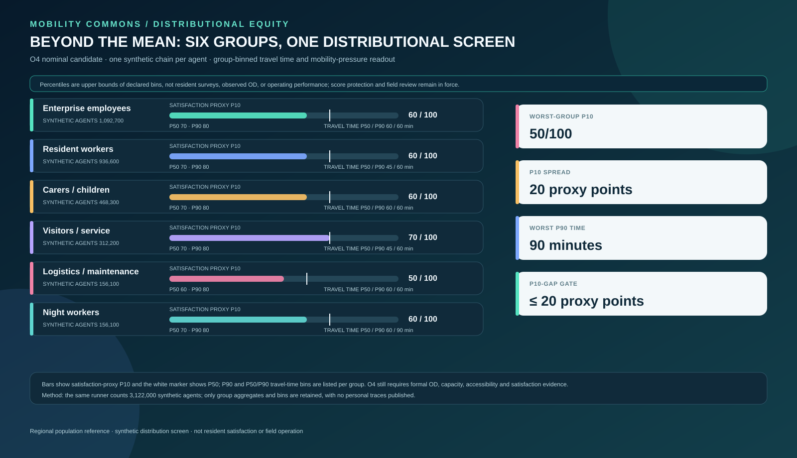
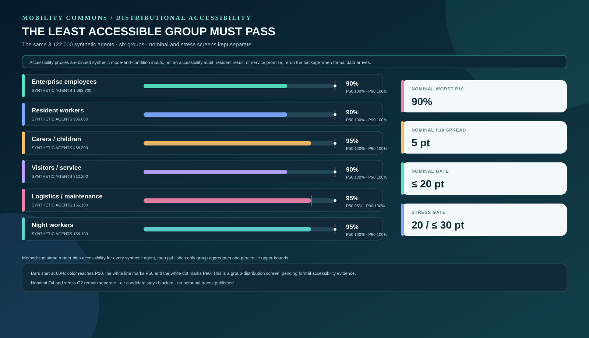
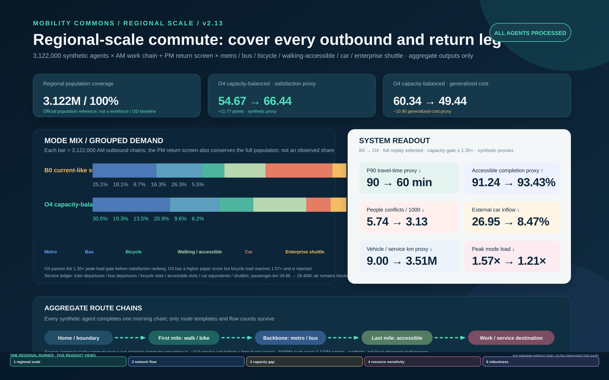
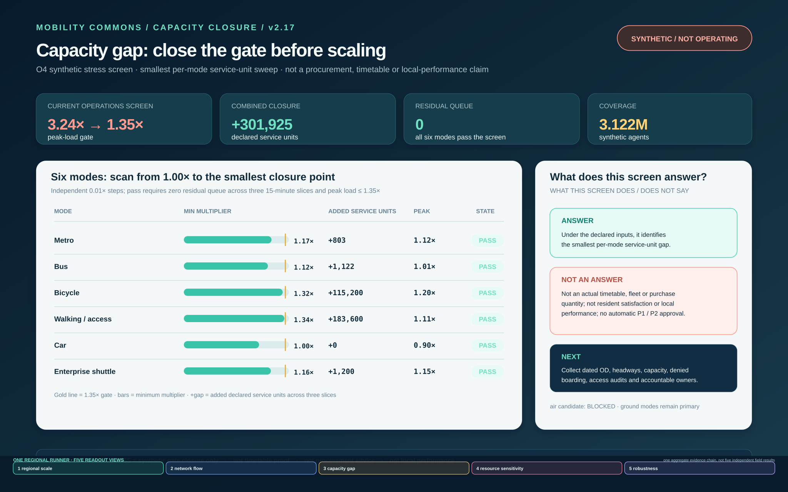
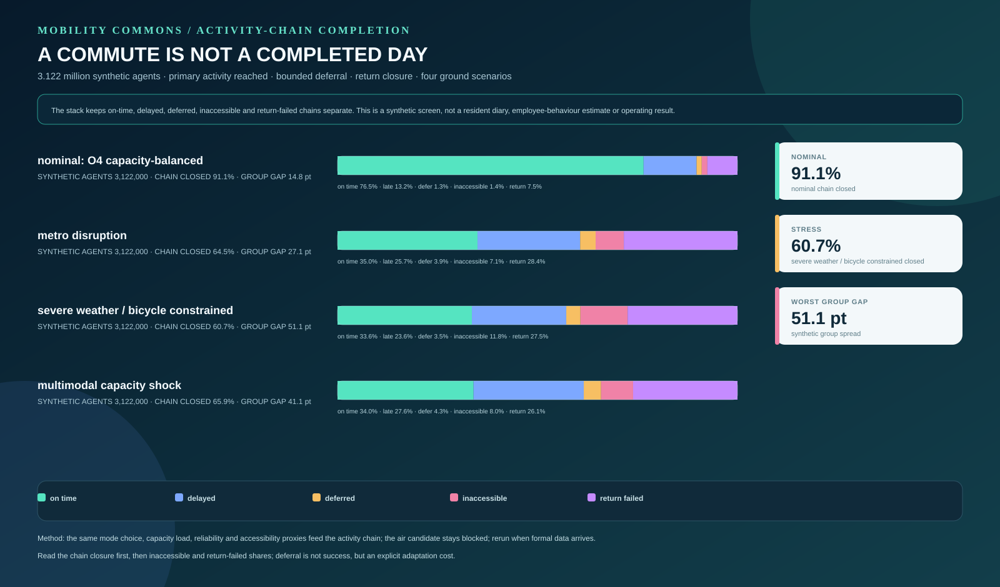
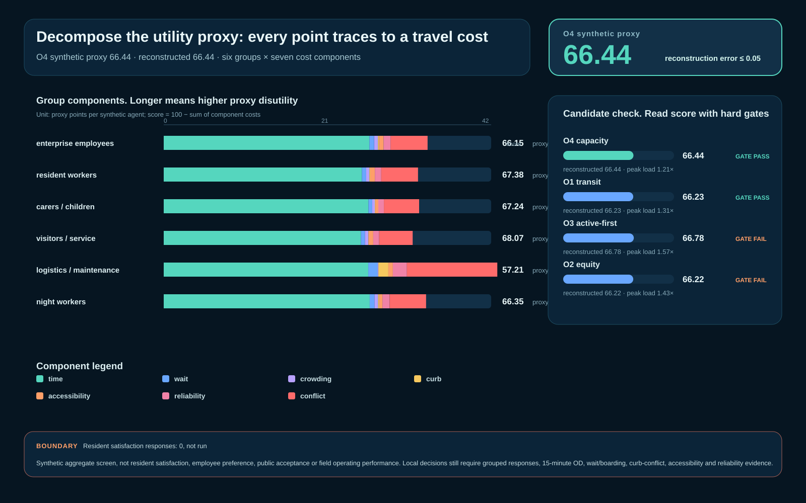
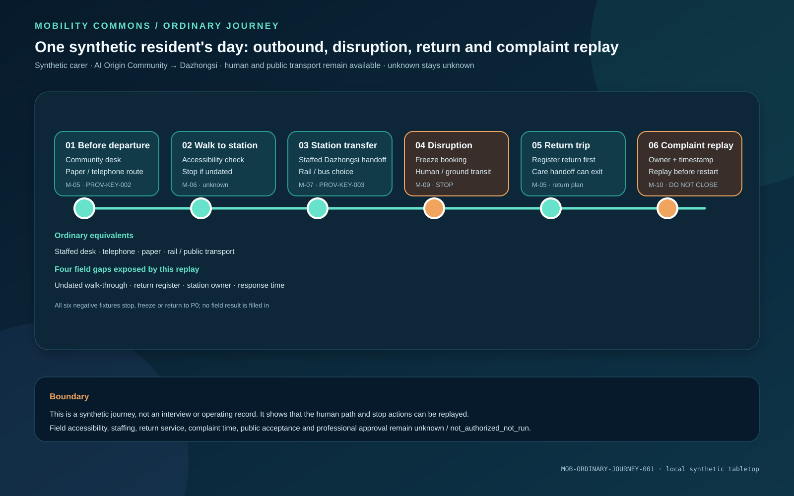

coverage / population
3,122,000/3,122,000
synthetic agents processed
Synthetic screen outputs, not Haidian road conditions, observed flows or local OD.
The same regional runner bins synthetic per-agent travel time, satisfaction and accessibility proxies by six groups. Under O4, the logistics/maintenance group has a satisfaction-proxy P10 of 50/100, night workers have a P90 travel-time bin of 90 minutes, the group P10 spread is 20 proxy points and the accessibility-proxy P10 spread is 5 proxy points. The nominal accessibility gate is 20 points and the stress gate is 30 points. P10 keeps the lower tail visible beside the overall mean; these are synthetic screen outputs, not resident experience, a resident accessibility walk-through, an accessibility audit or operating performance.


The same runner bins accessibility proxies for six synthetic groups at P10, P50 and P90. The nominal O4 accessibility-proxy P10 spread is 5 proxy points against a 20-point gate; under severe-weather stress O2 is 20 proxy points against a 30-point stress gate. This is a synthetic sufficiency screen, not a resident accessibility walk-through, an accessibility audit or an operating promise.
A compact readout from the same regional runner. Every value is replayable synthetic screen output; none substitutes for resident research, field walk-throughs, dated service and capacity records, operating permission or formal professional judgement.
Synthetic screen outputs, not Haidian road conditions, observed flows or local OD.
A resident survey result remains pending formal evidence; this is not a resident satisfaction result.
add service before expansion; this is not an actual fleet shortage.
Synthetic units, not an actual timetable; dated operations evidence is still required.
Below the 1.35× network gate; the B0 reference reaches 1.6539×. Synthetic screen outputs, not a Haidian road result.
A relative resource index, not kWh, MJ, gCO₂e or environmental performance.
A transparent synthetic stress test, not local resilience; wheelchair recovery proxy is 27.2997 minutes and a synthetic screen passes does not establish field response.
Resident, carer/child, night-worker and logistics/maintenance groups; synthetic range, not resident experience.
A synthetic queue change, not an enterprise response.
synthetic enterprise agents, not employee behaviour.
synthetic inputs, not procurement, timetables or operating commitments.
synthetic sufficiency screen; not a resident accessibility walk-through, with a 20-point gate.



The same mode, capacity, reliability and accessibility proxies replay 3,122,000 synthetic agents in each of four ground scenarios. The screen separates on-time, delayed, deferred, inaccessible and return-failed chains. Nominal O4 closes 91.06% of chains; metro disruption 64.53%, severe weather / bicycle constrained 60.74%, multimodal capacity shock 65.90%. A stress-gate failure is a stop-and-calibrate signal, not a local resilience claim.

The O4 synthetic satisfaction proxy is 66.44, and its seven declared costs reconstruct 66.44. The board separates time, waiting, crowding, curb, accessibility, reliability and people-flow conflict so a reviewer can see which costs lower the score. Observed resident satisfaction responses remain at 0. This is a synthetic aggregate screen, not resident satisfaction, employee preference, public acceptance or field operating performance.

This board separates package_state, content review eligibility and official-spatial-data-dependent professional scoring. `content_review_eligible=true` means an organiser polygon gap does not block content review; `professional_scoring_eligible=false` keeps official SITE_BOUNDARY and KEY_AREA polygons as prerequisites for that formal scoring axis. Maintainers may record a Review Agent intake score on the content-review axis; that score remains separate from official-spatial-data-dependent professional scoring.

Zhou Lan is a synthetic carer. She obtains a paper, telephone or staffed route at the AI Origin Community desk, follows the accessible segment to Dazhongsi and keeps a staffed transfer; snow, outage or curb conflict freezes the booking and returns service to human support and ground public transport. The return and complaint entry must also exist before departure.

234 mode, service-unit, mode-weight and synthetic-population fields are registered one by one. Every field is agent_proposed or design_target, observed_count=0 and field_status=not_authorized_not_run. The board shows declared inputs, method references and the field calibration still required; it does not present synthetic values as field results.

Eight question entrances connect a public question, synthetic screen, authorised input, accountable owner, response receipt, appeal, pause and fallback. Field and consent status remain not_authorized_not_run, and the board does not represent resident support, public consensus or operating permission.